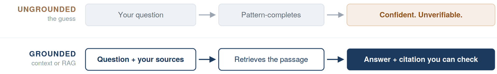

Free Resource · Guide
Overcoming Hallucinations
Two moves that keep AI honest: context and retrieval.
AI doesn't lie, it uses Next Token Prediction which essentially just completes patterns based on the input you provide. When it lacks the specific information or context that your question and/or problem needs, it produces something fluent and plausible instead of saying it doesn't know. Thus, hallucinations aren't a random glitch, but rather, it demonstrates a retrieval failure and can be fixed with strategy and discipline.
Here are two ways to help you overcome hallucinations.

Scroll the diagram sideways to see both paths.
Fix one
Context — the ten-second fix.
Paste the source in alongside the question. You are doing the retrieval by hand — and it works on any tool, today, with no setup.
- Give it the actual document — the rubric, the assignment sheet, the passage, the policy. Not your description of it.
- Name the boundary — "Answer only from what I pasted. If it isn't in there, tell me it isn't."
- Ask for the receipt — "Quote the exact line you based that on." A claim with no line behind it is a guess.
Weak
"What does our late work policy say?"
→ confidently describes a policy that isn't ours.
Strong
"Here is our handbook section on late work [paste]. Answer only from this: what happens to an assignment turned in three days late? Quote the exact line you used."
Fix two
RAG — the ten-minute fix.
Retrieval-Augmented Generation: build the library once, and every question after that is grounded automatically. Example — Gemini Notebook, Google's research tool, renamed from NotebookLM in July 2026.
- Create a notebook — one per unit, course, or question.
- Add your sources — PDFs, Google Docs, Slides, websites, YouTube videos, audio.
- Ask your questions or build the artifact — answers are built from your sources, not the open internet.
- Open the inline citation — it points at the exact line it used. Read it.
- Keep it — add sources as the unit grows. The notebook is the knowledge base.
What this looks like for you
Same move, three seats.
Educators
Upload your rubric, standards, and anchor papers. Feedback comes back calibrated to your criteria instead of averaged-out ones.
Students
Upload the assigned reading and your notes. You get a study partner that can only answer from the actual text — and shows you where.
Parents
Upload the handbook, syllabus, IEP, or district policy. Ask plain questions, get answers quoted from the actual document.
Gemini Notebook is 13+ on personal Google accounts and available to all ages through Google Workspace for Education, with stricter content policies for under-18 users. Check your district's approved-tools list before assigning it.
Before you trust it
Grounding shrinks hallucination. It does not delete it.
Three questions, every time:
- What does it retrieve from?
- Can I see the citation?
- What does it do when the answer isn't in my sources?
Then open the citation and actually read it — a citation that exists is not the same as a citation that's right. And the ceiling is still your sources: vague in, confidently vague out.